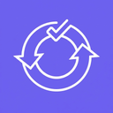
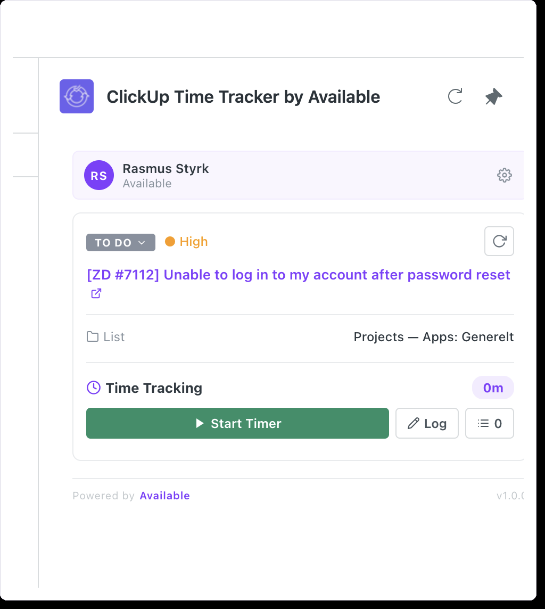
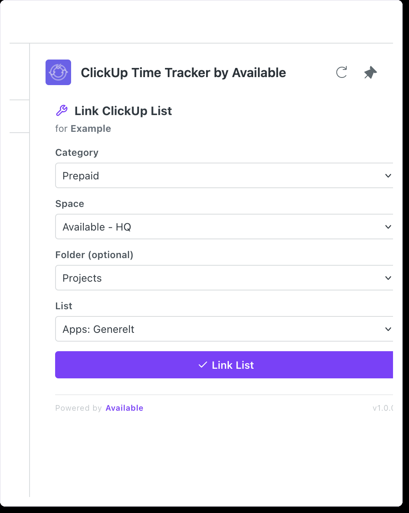
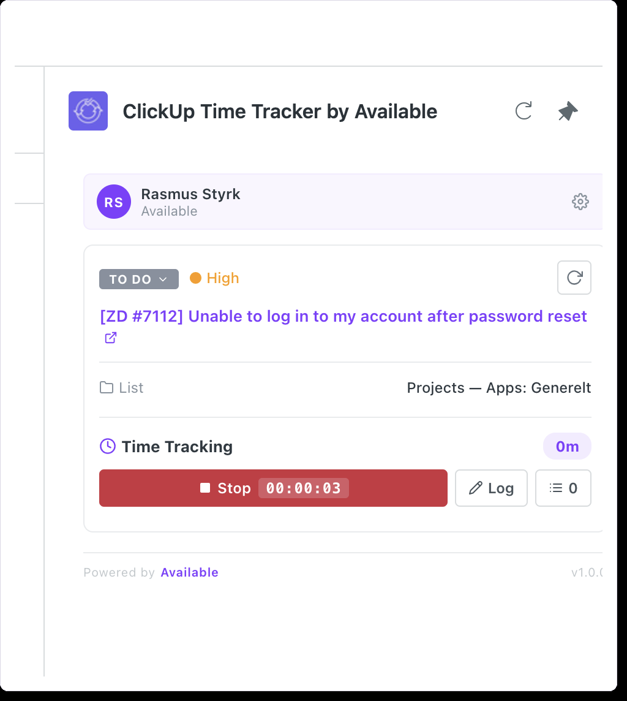
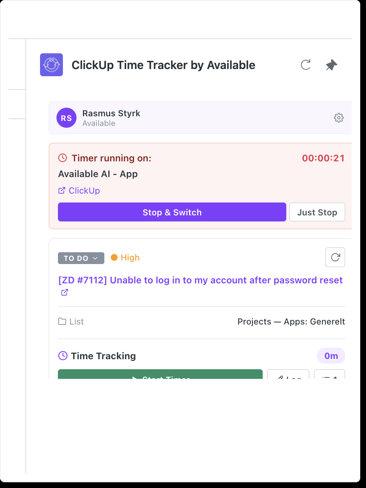

Create tasks, track time, and sync ClickUp — directly from Zendesk.
Create new ClickUp tasks directly from any Zendesk ticket, or link to existing ones with the searchable task picker. Task status, priority, and project info are visible at a glance.

Map each Zendesk organization to a ClickUp space, folder, and list. Once configured, new tasks are automatically scoped to the right project — no manual selection needed.

Start a timer with one click and see it counting in real time. When you stop, optionally add a description before the entry is logged to ClickUp. Review and edit entries anytime.

Switch between tickets without losing track. If a timer is running on another task, a banner shows which one — with links to both ClickUp and the Zendesk ticket.

When a Zendesk ticket is solved or closed, the linked ClickUp task status is automatically updated.
Each agent connects their own ClickUp account. Time entries are attributed to the right person.
Link existing tasks with a searchable dropdown — including subtasks. No need to copy-paste IDs.
Install from the Zendesk Marketplace. The app appears in the ticket sidebar.
Each agent clicks "Connect ClickUp" and authorizes via OAuth. No API tokens needed.
Link Zendesk organizations to ClickUp lists. This only needs to be done once per organization.
Create tasks, track time, and sync statuses — all from the ticket sidebar.